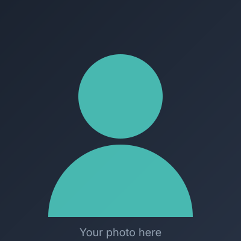

Quality Assurance
- Manual & Automated testing
- Functional Testing
- Regression Testing
- API & data validation
- Bug triage & reporting
Hi, my name is
Solution oriented and focused on detail analysis, used AI to enhance productivity and efficiency
I mostly enjoy playing video games or surfing the internet, whatever piques my interest. I consider myself more of a quiet person, but I do get conversational if i get comfortable.
Mostly, I like to work as Manual QA, but I am very open to venture out into Automation Testing. Currently this is where my current company is working on. I also have developed some tools with the help of AI, where basically it helped a lot in regards with our productivity and efficiency.
Most problem-solving that we do is mostly intertwined with QA Testing and Client Support. I like to solve somewhat more complex issues say more on data-related concerns, since most of what I do is data manipulation. Currently I am focusing with Cypress to get started on my Automation Testing journey, and further more since I am building tools as well, Github. One of my main advantages in testing is in the current role I have, I do both QA Testing and Client Support, which gives me an edge since I have an idea on how their users behave/use our systems. This is also used in our test cases as well, given also the fact that aside from this, the expectations should also be aligned with our Business Requirements.
Here are a few technologies I work with:

[What you did and the impact you had. Use one or two bullet-style lines.]
[What you did and the impact you had.]
[What you did and the impact you had.]
[Invite people to reach out — a job, a collaboration, or just to say hi. Let them know the best way to contact you.]
Say hello